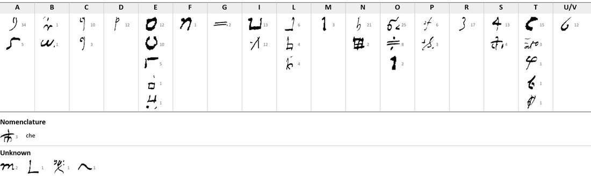

At a glanceKey recovered from the ciphertext alone, partial · about 85% of 282 signs
- The letter
- Bartolomeo Tantucci to messer Antonio del Vescovo, rector of the cathedral and member of the Balìa, from Sarteano(?), 25 (or 20) August 1528.
- Where
- Archivio di Stato di Siena, Concistoro 2308, fasc. 2 “Lettere in cifra”, no. 17; DECODE R4805, catalogued “1500–1599” with no status.
- The cipher
- Homophonic substitution, 41 signs, no word division: up to five signs for each vowel, every double letter written with two different signs, and the ordinary “che” abbreviation used as a sign.
- How it was deciphered
- George Lasry transcribed the cipher in CTTS; Claude recovered the key by frequency and contact analysis, isomorphs and cribs (15–17 October 2026).
- What it says
- Rumoured bishoprics for “the nephews”, the Cardinal of Naples and the affairs of Pitigliano, and a plan to cut off victuals; “parlo breve et in substantia perché la cifra vuol così”.
- Still open
- The opening words of two points and one phrase; “el Mustetto”, the Countess and the “Otto”.
- Credit
- George Lasry, with CTTS and Claude: transcription, key and reading, sent by email to Daniel Bourdeau on 17 October 2026. This page reports his result.
This letter belongs to the Sienese bundle of cipher letters, in which each letter has its own key. The two other sixteenth-century Sienese pieces in George Lasry’s report, no. 15 (Bandini, 1547) and no. 5? (the artillery slip), are different ciphers, each with its own page; the bundle is described on its own page.
01The letter and its key
282 cipher signs in eight lines of the first page, inside a clear frame: heading, salutation, the connecting words In prima, Secundo, et, quando, Terzo, closing, signature and the endorsement “questa Cifara [è] quella di Balìa”. The verso carries the address. The key has 41 signs, many of them shaped like digits; four signs remain without a value.

02The decipherment
George Lasry’s reading, unchanged (cipher and clear text together; abbreviations expanded in brackets; (?) and [?] as in his edition):
1528. Molto mag[nifi]co et generoso Cavaliere etc. poi che V.S. è absente al mag[istra]to di Balìa, li comunicamo alcune cose importanti del governo, acciò possa intender cose che occorranno, haver lo intrinsico. In prima qua per molti et quasi publico, non che el Mustetto(?) l’à(?) a certe promessioni di non so che vescovadi per li nipoti; non so se è vero. Secundo [?]o a date(?) vi dà lo Cardinale di Napoli circa le cose di Pitig[l]iano, perché v’à parentado; et anco è stato cosa de la contessa quando erano giovani; pare che aon [con?] essa n’abbi facto lo amore. Terzo Otto(?) volendo lo avere, lco[??]stren[?]niare, non vi vada vittuaria né siano lassate praticare lo nestro [nostro] contado. Parlo breve et in substantia perché la cifra vuol così. M[esser] Bart[olo]meo Lamilucci(?) [Landucci?], quale era segretario da la Pratica, et la potrà leggere agevolmente. Di Sart[ean]o(?) a dì 25(?) di agosto 1528. … Deditissimo Bart[olome]o Tantucci questa Cifara [è] quella di Balìa
His translation: “Since Your Lordship is absent from the magistracy of the Balìa, we communicate to you some important matters of the government … First: here, among many and almost publicly, [it is said] that the Mustetto(?) has(?) certain promises of I know not what bishoprics for the nephews; I do not know whether it is true. Second: the Cardinal of Naples has(?) given and gives [his hand] in the affairs of Pitigliano, because he has kinship there; and it has also been a matter of the Countess, when they were young … Third: the Otto(?), wishing to have it, [in order to] constrain(?) [it] …, let no victuals go there, nor let [anyone] be allowed to deal with our contado. I speak briefly and in substance because the cipher wants it so.” Address: “Al mag[nifi]co et generoso cavaliero M[esser] Ant[oni]o del Vescovo rectore Dig[nissi]mo de la eccl[esi]a cattedrale. Cifara.”
In August 1528 Siena was governed by the Balìa of the popular regime that had expelled the Noveschi in 1524–25; Pitigliano was an Orsini county under Sienese suzerainty, and the “Cardinal of Naples” should be Vincenzo Carafa, created cardinal in November 1527 (George Lasry’s identifications, which he marks as not verified).
03What remains
- The opening words of the second and third points and the phrase “lco[??]stren[?]niare”: uncertain in the reading (about 15% of the signs).
- Unidentified: “el Mustetto”, the Cardinal of Naples (Vincenzo Carafa?), the Countess (of Pitigliano?), the “Otto”, the place Sarteano(?) and the day (25 or 20).
- The project’s own survey of 24 September 2026 had read the docket as a letter to Tantucci on 20 August; George Lasry’s reading of the signature and address is followed here.
04Sources
- Archivio di Stato di Siena, Concistoro 2308 fasc. 2 no. 17: DECODE R4805.
- George Lasry, “The cipher documents of Concistoro 2308, fasc. 2”, report of 17 October 2026, pp. 25–27 (sent to Daniel Bourdeau; quoted in the repository folder). His sources: J. Hook, Siena: A City and its History (1979); C. Roth, The Last Florentine Republic (1925); O. Malavolti, Dell’historia di Siena (1599); G. Bruscalupi, Monografia storica della contea di Pitigliano (1906); Eubel, Hierarchia Catholica III.
Manuscript rights: Archivio di Stato di Siena.
Report text, key figure, profile and the project’s earlier transcription: targets/siena17/.